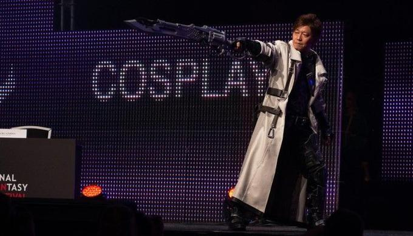

Naoki Yoshida
The man who redefined the Final Fantasy brand.

Naoki Yoshida stands on stage at FanFest 2018 to display the gear for the new 'Gunbreaker' job as he gets ready to discuss the new 'Shadowbringers' expansion.
Naoki Yoshida's journey within the Final Fantasy brand:
- 2010 - Became Producer/Director of FFXIV
- 2013 - Revamped the FFXIV game (after it's horrible launch)
- 2015 - Came out with the first expansion Heavensward
- 2015 - Helped bring Final Fantasy:Brave Exvius to life
- 2015 - Continued to expand FFXI with the Rhapsodies of Vanadiel
- 2016 - Helped hammer out the FFXV game and move (Kingsglaive)
- 2017 - Expanded the FFXIV game with the Stormblood expansion
- 2018 - Helped create Dissidia Final Fantasy NT
- 2019 - Further expanded the FFXIV story with the Shadowbringers expansion
- 2020 - Began work on Final fantasy XVI
"Unless you are a genius, you cannot make something completely from nothing."
For more information on Naoki Yoshida, go here.